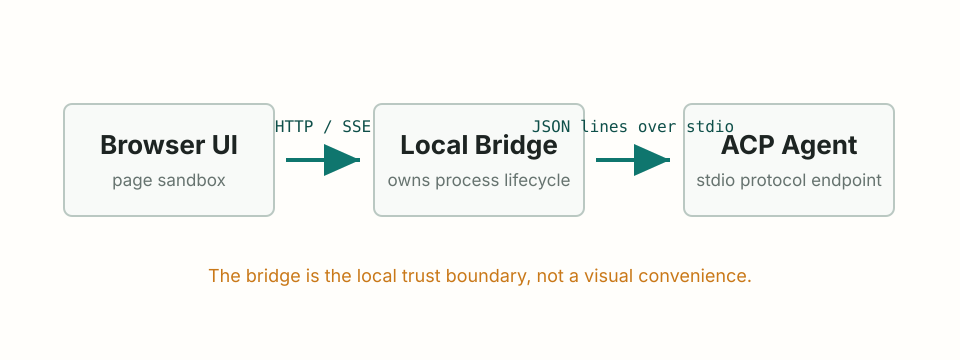

ACP 基础
把 ACP 桥接到浏览器
浏览器无法启动本地子进程，因此需要一个本地 bridge 来持有 ACP 进程。
浏览器为什么需要桥接
浏览器页面不能安全地启动本地 Agent 进程，也无法直接管理 stdin/stdout 管道。
常见做法是引入一个本地 bridge：浏览器与 bridge 通过 HTTP 或 SSE 通信；bridge 再通过 stdio 与 ACP Agent 通信。
为什么浏览器不能直接管理 stdio？这涉及浏览器的哪个核心安全限制？
浏览器的沙箱不允许网页直接访问本地文件系统或启动子进程；这是同源策略与沙箱安全模型的基本约束。
Bridge 架构
Browser UI
| HTTP 或 SSE
Local Bridge
| JSON lines over stdio
ACP Agentbridge 负责：进程生命周期、请求 id、工具策略、流转换。

- Browser UI
- Local Bridge
- ACP Agent
- Local Bridge
- Browser UI
- 页面发起请求
浏览器把用户消息发送给本地 bridge。
- Bridge 转换协议
bridge 生成 ACP 请求，并写入 Agent stdin。
- Agent 返回事件
bridge 读取 stdout 中的 JSON line 事件。
- 浏览器更新界面
bridge 通过 HTTP 响应或 SSE 把结果送回页面。
最小 HTTP 职责
一个小型 bridge 最初只需要承担这些职责：
- 接收来自浏览器的用户消息。
- 把它转换成 ACP 请求。
- 读取 Agent 响应。
- 以流式或一次性方式返回答案。
- 把日志和错误存到可调试的位置。
HTTP、SSE 还是 WebSocket
- HTTP：适合请求-响应式交互。
- SSE：适合把 Agent 的流式文本推送到浏览器。
- WebSocket：适合双方需要频繁双向通信的场景。
从最简单的传输开始，只要能保留学习闭环即可。
Should this browser integration use WebSocket from day one?
- A. Yes, because it sounds more real-time.
- B. Not necessarily; start with HTTP/SSE if the browser mainly receives streamed text.
- C. Only after the UI needs frequent bidirectional control messages.
视角
依据：基于本章对浏览器职责、bridge 边界和传输需求的拆分；具体选择仍需按真实交互频率验证。
B 是更稳的默认判断，C 是升级条件。成熟的取舍不是选择“更高级”的协议，而是先确认交互形态：如果只是用户发消息、Agent 流式返回文本，SSE 的复杂度更低；如果之后出现高频双向控制，再引入 WebSocket。
如果只需要“用户发一条消息，Agent 流式返回一段文字”，应该优先选 HTTP、SSE 还是 WebSocket？
SSE，因为浏览器只需要接收服务器推送的流式文本，不需要频繁双向通信。
模块小结
- 浏览器需要 bridge 才能使用本地 ACP Agent。
- bridge 负责进程和协议的整洁性。
- SSE 通常足以支撑流式回答。
- 在本地闭环被证明有用之前，不要急着搭建完整平台。
你正在设计一个浏览器内的 ACP 助手。团队提出了两种方案：
方案 A：浏览器页面直接通过 JavaScript 启动本地 Agent 进程。 方案 B：浏览器通过 SSE 连接一个本地 bridge；bridge 启动并持有 stdio Agent 进程。
你会怎么选？先写下你的主要顾虑。
作者视角
依据：基于本章对浏览器沙箱、本地 bridge 和 stdio 进程边界的总结；具体实现仍需按目标运行环境验证。
浏览器的核心约束是沙箱：网页不能直接启动子进程，也不能直接读写本地 stdin/stdout。因此 bridge 不仅是“可选中间层”，而是让浏览器能够与本地 Agent 交互的最小可信边界。
取舍与 trade-offs
- 方案 A：违反浏览器安全模型，无法在不引入私有插件或 Native Messaging 的情况下实现。
- 方案 B：bridge 承担进程管理与协议转换，浏览器只负责展示与 SSE 接收，复杂度可控。
- WebSocket 替代 SSE：在没有高频双向通信需求时，比 SSE 更复杂。
常见误区
- 不要把 bridge 做成通用远程代理，否则会带来未授权访问风险。
- 不要假设 bridge 所在机器与浏览器所在机器一定相同；部署形态会变化。